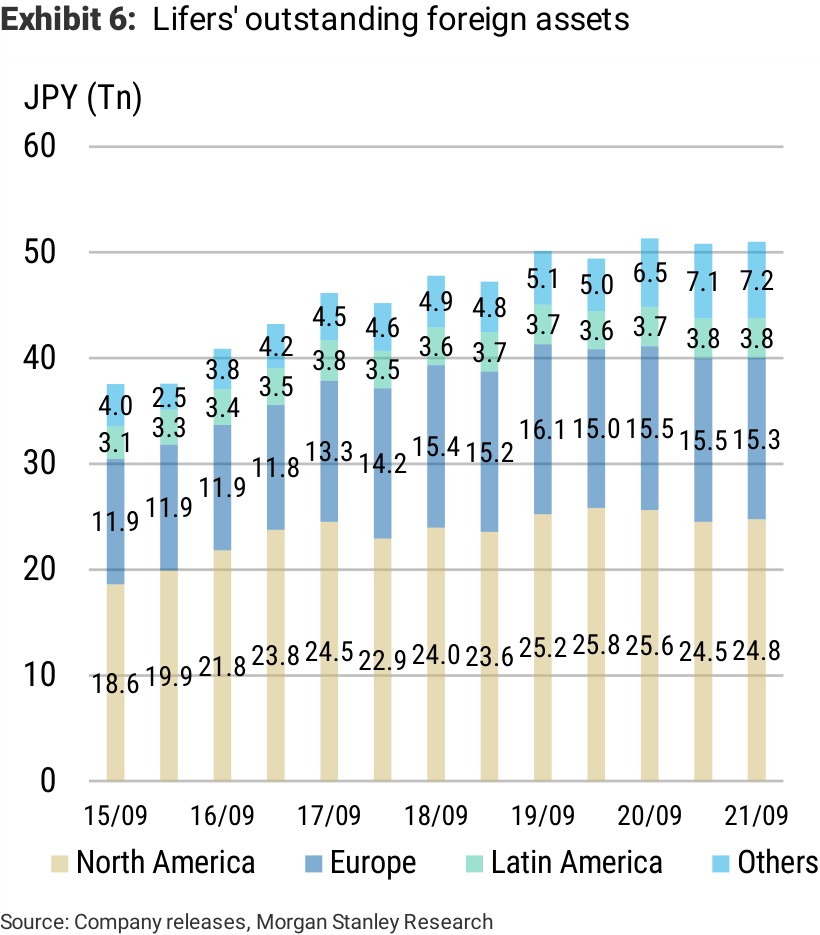
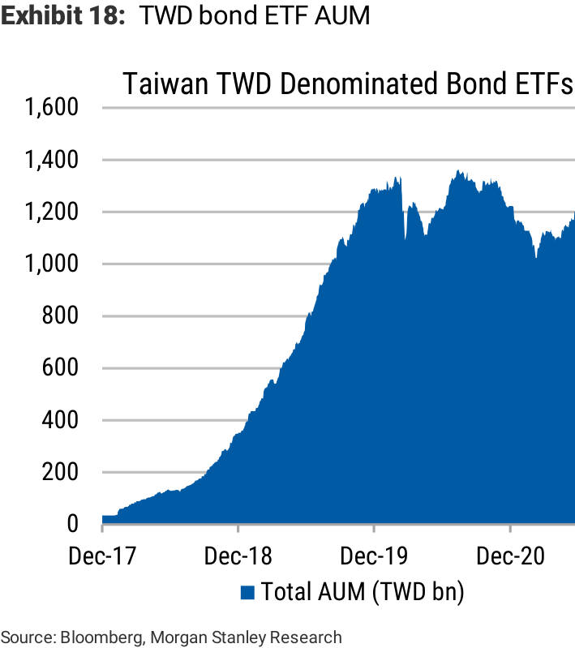
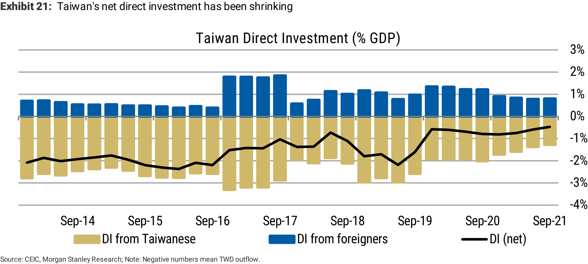

December 22, 2021 05:00 AM GMT
Global Macro Strategy Global Macro Strategy || Asia Pacific Asia Pacific
Asian Lifers Monthly FX Snapshot: December 2021
Japanese, Taiwanese and Korean lifers are big players in the FX and bond markets. Pension funds are influential participants as well. We provide monthly updates on these investors' activities and relevant FX flows.
"The end is in the beginning and lies far ahead" - Ralph Ellison We would like to inform our readers that due to personnel changes, this December's note will be the last publication of our regular Asian Lifers Monthly FX Snapshot . This monthly report started as Taiwan Lifers Monthly FX Snapshot , in which we focused on Taiwan lifers' activities and the impact on TWD NDF markets. We also discussed other relevant topics related to TWD, for example TWD-denominated bond ETFs and repatriation flows. In August 2020, given more interest, we expanded the scope of our report by adding discussion on FX- related topics of Japanese and Korean lifers – and changed the title to Asian Lifers Monthly FX Snapshot . We thank you for your readership and support in the past two years, and wish our readers a warm and healthy holiday season and a prosperous 2022. What's in this month's report?
1. Japan: Looking back home: We look into (1) 1H FY21 earnings and (2)
monthly flow data. 1H FY2021 (April-September 2021) financials for Japan’s 11 biggest life insurers were basically consistent with investment plans released back in April in as much as they showed quite significant additions to domestic bond holdings. Lifers as a whole increased their exposure to foreign bonds in 1H FY2021 while cutting back their foreign equity positions. Hedge ratios were more or less unchanged from end- March 2021 at around 60% for USD and 89% for EUR bond positions.
2. Taiwan: A cheatsheet for TWD drivers: Since we started this monthly
publication in 2019, we have been often asked about Taiwanese lifers' hedging behaviour in NDF markets. As for TWD spot movements, we are frequently asked about foreign investors' and exporters' flows, repatriation flows, the Taiwan semiconductor outlook versus Korean semiconductors, the CBC's stance, etc. In this month's report, we summarise all the major drivers and the ones we think are particularly important to watch.
Exhibit 1: Japanese lifers: Hedge ratio by currency
====================================================================================================
Japanese Investors: Looking Back Home
This will unfortunately be the final report in this series for at least the time being. In the hope of providing useful and actionable information right to the very end, we conclude with a summary of recent financial results for major life insurers along with our usual discussion of monthly International Transactions in Securities statistics (Ministry of Finance) and Balance of Payments (Bank of Japan/Ministry of Finance) figures.
2021 is of course now drawing to a close, but readers are still likely to be focusing considerable attention on potential market catalysts including the spread of the Omicron variant, ongoing problems in China’s property sector and various other overseas factors.
Major lifers' earnings
1H FY2021 (April-September 2021) financials for Japan’s 11 biggest life insurers were basically consistent with investment plans released back in April in as much as they showed quite significant additions to domestic bond holdings ( Exhibit 2 ). As of early FY2021, investors had told us that they were struggling to increase their JGB positions by as much as planned, but we were not all that surprised by the observed pace of buying for (say) the April-June quarter, which was indeed somewhat slower than in FY2020 – an unusually rapid year – but otherwise quite quick by historical standards (from FY2012).
More recent data actually show very substantial net purchases of JGBs over the first eight months of FY2021 (through November), suggesting that lifers have indeed returned to this asset class in earnest. JSDA trading flow data actually show lifers’ net purchases of long-end JGBs running at the fastest pace since FY2012 through October, albeit with some ground then being lost relative to FY2020 due to a year-on-year decline in the November figures released on December 20 ( Exhibit 3 and Exhibit 4 ).
Exhibit 2: Outstanding assets of major lifers (FY21 1H-end)
====================================================================================================
These sizeable additions to JGB holdings – particularly in the long-end sector – are perhaps best viewed in the context of preparations for Japan’s 2025 adoption of an economic value-based solvency regime. Some investors had indeed indicated that economic solvency ratios (ESRs) were already at healthy levels as of early FY2021, but subsequent financial results and Japan Securities Dealers Association (JSDA) data suggest that super-long JGBs have nevertheless continued to see quite strong buying interest.
We see little prospect of the JGB yield curve steepening appreciably for at least the time being, given current concerns about the Omicron variant, ongoing problems in China’s property sector and various other overseas factors, but we would expect any temporary weakness in the super-long sector to be viewed as a dip-buying opportunity.
What about overseas assets? Lifers as a whole increased their exposure to foreign bonds in 1H FY2021 while cutting back their foreign equity positions ( Exhibit 2 ). Our impression is that portfolio allocations have been adjusted quite cautiously in response to both market conditions and developments on the monetary policy front (with particular attention of course focusing on the Fed), though in 1H FY21 the outstanding balance remained roughly flat from 2H FY20 ( Exhibit 6 ).
Exhibit 3: Long-end JGBs/swap receiver balance and duration
Exhibit 4: Net purchasing speed of long-end JGBs by lifers
====================================================================================================
The first half of FY2021 was indeed quite volatile, but it would appear that lifers looked to increase their holdings of USTs and other foreign sovereigns during phases of temporary cheapness (such as in August and September). This is hardly surprising given that yields climbed to more attractive levels as the US deployed further fiscal stimulus and the prospect of Fed tapering became a major market theme.
Domestic equity holdings actually shrank despite a September rise in book values ahead of the October 31 Lower House election, with something of a reallocation to domestic bonds perhaps the most likely explanation.
Meanwhile, foreign bond holdings increased slightly, but that might have been due largely to improved valuations (as opposed to additional purchases). Swap receiver positions increased overall due to sizeable contributions from a number of individual lifers, and a reduction in swaption exposure ( Exhibit 7 ) also appeared to reflect company-level positioning rather than a universal trend.
Hedge ratios were more or less unchanged from end-March 2021 at around 60% for USD and 89% for EUR bond positions ( Exhibit 8 ): We fielded a number of questions from investors after it was reported that the average hedge ratio for the 'big nine' had dropped to 41.5%, but this difference basically boils down to one of calculation method, or more specifically depends on whether or not options are included for the purpose of hedge accounting. Our own calculations will perhaps accord more closely with market intuition.
Exhibit 5: Net purchase of long-end JGBs and 30y yield
Exhibit 6: Lifers' outstanding foreign assets
====================================================================================================
International Transactions in Securities
Starting with the former, we first note that banks (banking accounts) were very sizeable net sellers of foreign bonds last month. Banks had bought up foreign long- term debt securities (bonds) to the tune of some ¥2.7 trillion – the highest monthly figure since March 2020 – in September, and then made a further (roughly) ¥680 billion in net purchases for October ( Exhibit 9 ).
Exhibit 7: Lifers' outstanding swaption (receiver)
Exhibit 8: Hedge ratio by currency
Exhibit 10: Ministry of Finance (MoF) International

Exhibit 9: Ministry of Finance (MoF) International
====================================================================================================
Balance of Payments
Exhibit 11: Japanese investors' purchases of foreign medium-to-long-term debt by country
Exhibit 12: Foreign investors' purchases of domestic
====================================================================================================
First, Second,
1) Trade balance and exports:
====================================================================================================
2) Foreign equity flows:
Exhibit 13: Taiwan's trade balance versus TWD
Exhibit 14: Exports by product
Exhibit 15: Exports by region

====================================================================================================
3) TWD-denominated bond ETFs:
4) Repatriation flows and direct investment:
Exhibit 16: Foreign ownership of Taiwan stocks (%)
Exhibit 17: Foreign equity flows (US$m)
Exhibit 18: TWD bond ETF AUM
Exhibit 19: Taiwan's bond ETFs monthly flows
====================================================================================================
5) Indicators that the CBC looks at:
Exhibit 20: A total of ~TWD 300 billion has been repatriated, but we think that more than half is yet to be actually used for approved projects
Exhibit 21: Taiwan's net direct investment has been shrinking
====================================================================================================
Lastly, aside from the five main drivers discussed above, another seasonal factor to watch is the equity dividend payment season:
Exhibit 22: TWD NEER has been above or close to the upper 5% band, which is monitored by the CBC
Exhibit 23: Dividend payments to foreign investors – historical data
====================================================================================================
Exhibit 24: Japanese, Taiwanese and Korean lifers' foreign
Exhibit 25: Japanese, Taiwanese and Korean lifers' foreign
Exhibit 26: Taiwanese lifers' total assets versus foreign

Exhibit 27: Taiwanese lifers' foreign investments – monthly
====================================================================================================
Exhibit 28: Korean lifers' foreign and government bond investment (KRW tn)
Exhibit 29: Korean lifers' foreign and government bond
====================================================================================================